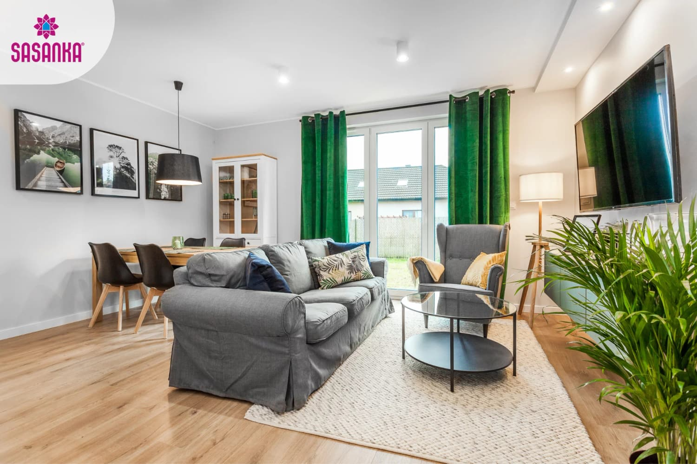
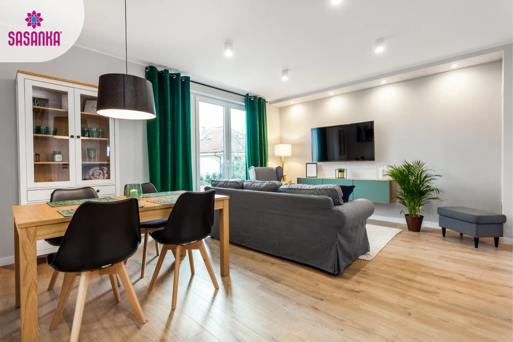
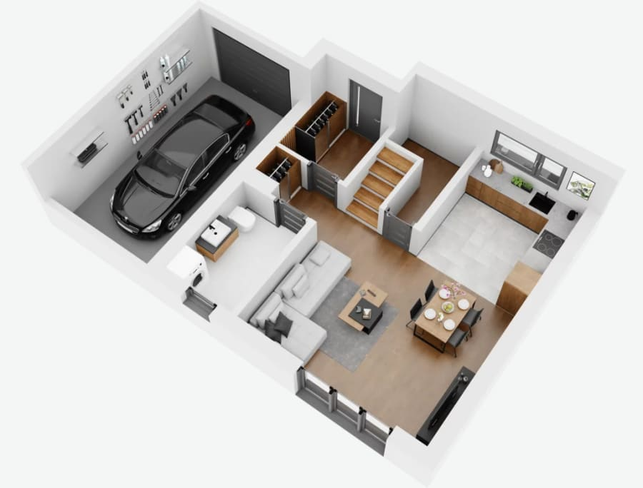
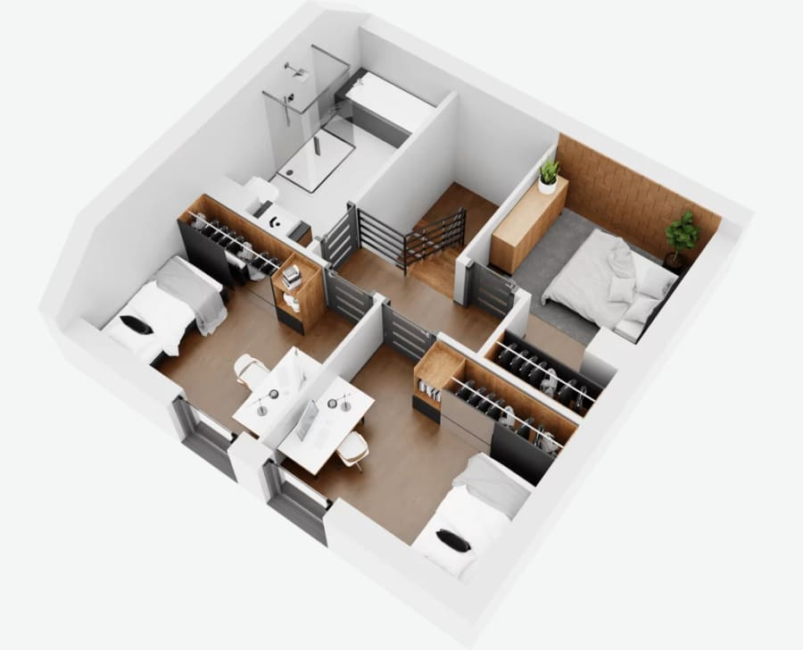
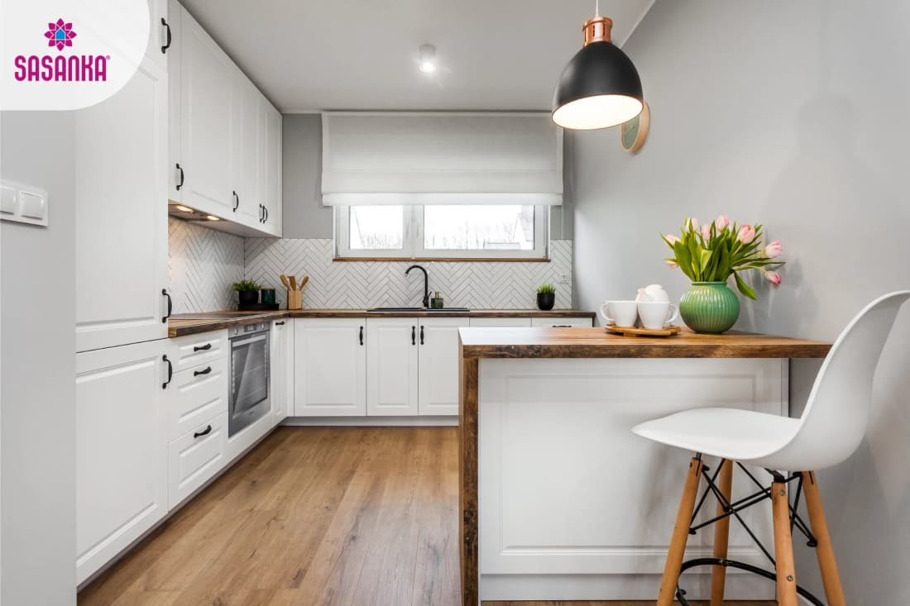
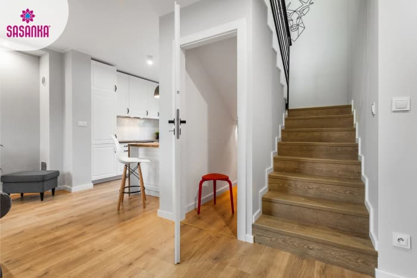
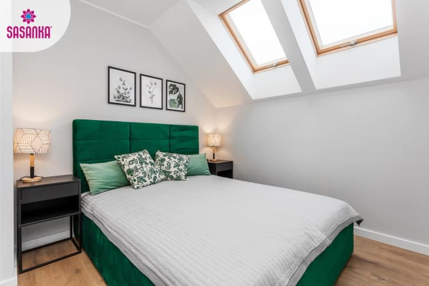
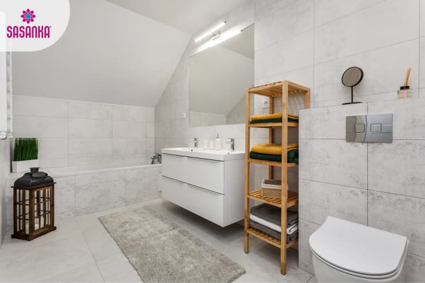

Sasanka XL z garażem w kameralnej inwestycji przy ul. Zaściankowej. Powstają dwa bliźniaki oraz jeden dom wolnostojący.
Osiedle Tłuszcz to inwestycja dla osób, które chcą mieć własny ogród, garaż i spokojniejszą przestrzeń do życia, ale nadal potrzebują kontaktu z miastem, koleją i codziennymi usługami.
Segment w zabudowie bliźniaczej z prywatnym ogrodem i garażem w bryle.
Drugi bliźniak w tym samym układzie, z osobnym wjazdem i analogicznym standardem.
Opcja dla kupujących, którzy chcą więcej przestrzeni wokół budynku.

Tłuszcz leży w powiecie wołomińskim. To praktyczna lokalizacja dla rodzin, które szukają spokojniejszego miejsca do życia z dostępem do PKP, szkół, sklepów i usług.
Układ jest prosty do zrozumienia: na dole strefa dzienna, kuchnia, łazienka i garaż; na górze trzy pokoje, łazienka, garderoba i miejsce do przechowywania.

| Nr | Pomieszczenie | Pow. |
|---|---|---|
| 1 | Wiatrołap | 3,74 m² |
| 2 | Łazienka | 5,40 m² |
| 3 | Salon | 22,47 m² |
| 4 | Kuchnia | 7,79 m² |
| 5 | Schowek | 0,73 m² |
| 6 | Garaż | 18,09 m² |

| Nr | Pomieszczenie | Pow. |
|---|---|---|
| 1 | Schody | 5,39 m² |
| 2 | Łazienka | 6,83 m² |
| 3 | Pokój 1 | 9,11 m² |
| 4 | Pokój 2 | 9,11 m² |
| 5 | Korytarz | 3,72 m² |
| 6 | Garderoba | 2,01 m² |
| 7 | Pokój 3 | 6,70 m² |
Finalna cena zależy od wybranego domu, dostępności i zakresu wyposażenia. Poniższe warianty porządkują rozmowę i pomagają szybko dopasować ofertę do budżetu oraz oczekiwań.
Dla osób, które chcą samodzielnie zaplanować wykończenie i kontrolować budżet.
Rozsądny pakiet dla rodzin, które chcą szybciej przejść od zakupu do wykończenia.
Dla kupujących, którzy chcą wyższy standard materiałów i spójny efekt wnętrza.
Najmniej angażujący wariant dla osób, które chcą dostać gotowy plan i jedną ścieżkę działania.
Dokładny zakres standardu, dostępność i ceny wymagają potwierdzenia w rozmowie. Oferta nie stanowi oferty handlowej w rozumieniu Kodeksu cywilnego.
Dla klientów zainteresowanych Osiedlem Tłuszcz najważniejsze jest zobaczenie realnej skali domu. Podobne domy Sasanka XL można obejrzeć w Trojanach, dlatego warto potraktować tę wizytę jako naturalny kolejny krok przed decyzją.
Klient może obejrzeć galerię, rzuty oraz wirtualny spacer, a potem skonfrontować je z rzeczywistą przestrzenią podobnej realizacji.
Link do podstrony: domizhomes.com/osiedle-tluszcz




Najlepsza rozmowa zaczyna się od dwóch informacji: który wariant domu Cię interesuje i czy chcesz zobaczyć podobną realizację w Trojanach. Na tej podstawie przygotujemy aktualny status oraz dalszą ścieżkę.
Bliźniak A, Bliźniak B albo dom wolnostojący.
Deweloperski, Komfort, Premium albo Pod klucz.
Rozmowa, materiały i ewentualne obejrzenie domów w Trojanach.
Wyślemy aktualny cennik, dostępność domów oraz informacje o wariantach wyposażenia.
Zdjęcia wnętrz i rzuty mają charakter poglądowy dla modelu Sasanka XL. Szczegóły inwestycji, dostępność, standard i cena wymagają indywidualnego potwierdzenia.